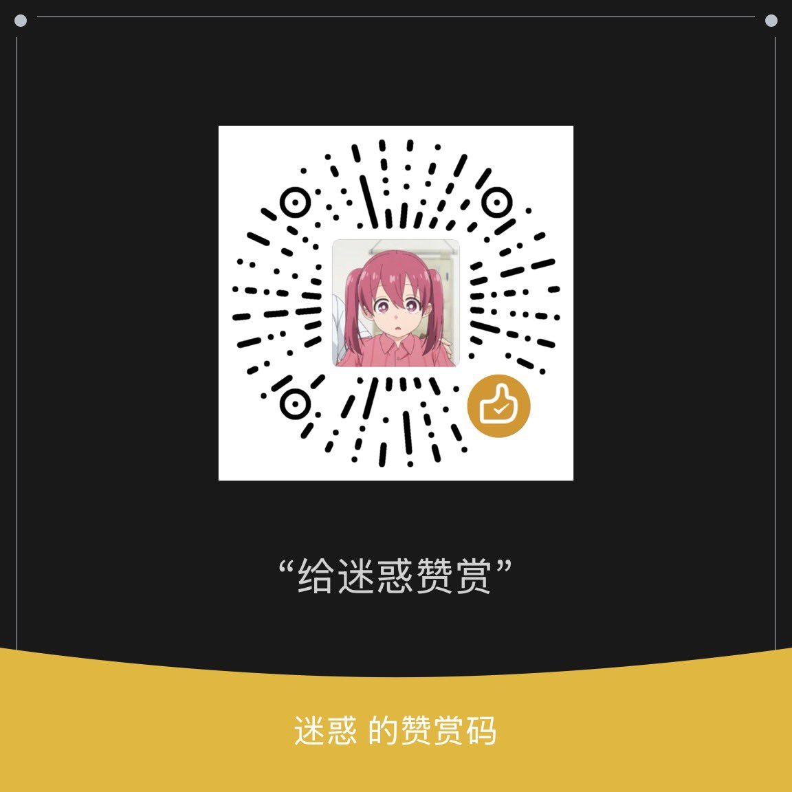
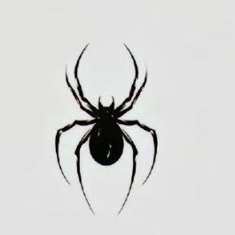

洛
@wndsfefoumxlw6
RT @nininililily: 置顶自介条
22年至今未飞升餐卷女(˶‾᷄ ⁻̫ ‾᷅˵)
06 163/45-48kg浮动（努力减肥中
我o我割我果（以前
🚪88（纯绿/ 188（半绿喵 介意旧照勿扰
双相/重度抑郁/进食障碍/重度睡眠障碍/多种药物成瘾
欢迎同类互fo互…


めいわく
@nininililily
置顶自介条
22年至今未飞升餐卷女(˶‾᷄ ⁻̫ ‾᷅˵)
06 163/45-48kg浮动（努力减肥中
我o我割我果（以前
🚪88（纯绿/ 188（半绿喵 介意旧照勿扰
双相/重度抑郁/进食障碍/重度睡眠障碍/多种药物成瘾
欢迎同类互fo互转。・°°・(＞_＜)・°°・。
只着了两年内的几张照片随便popo
挂赞赏码求打赏喵 https://t.co/L2Zt8smRYr